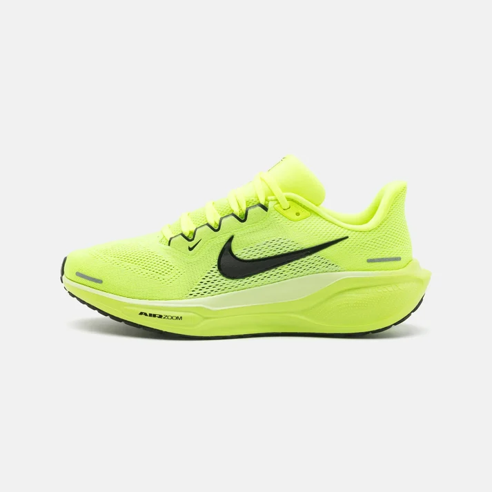
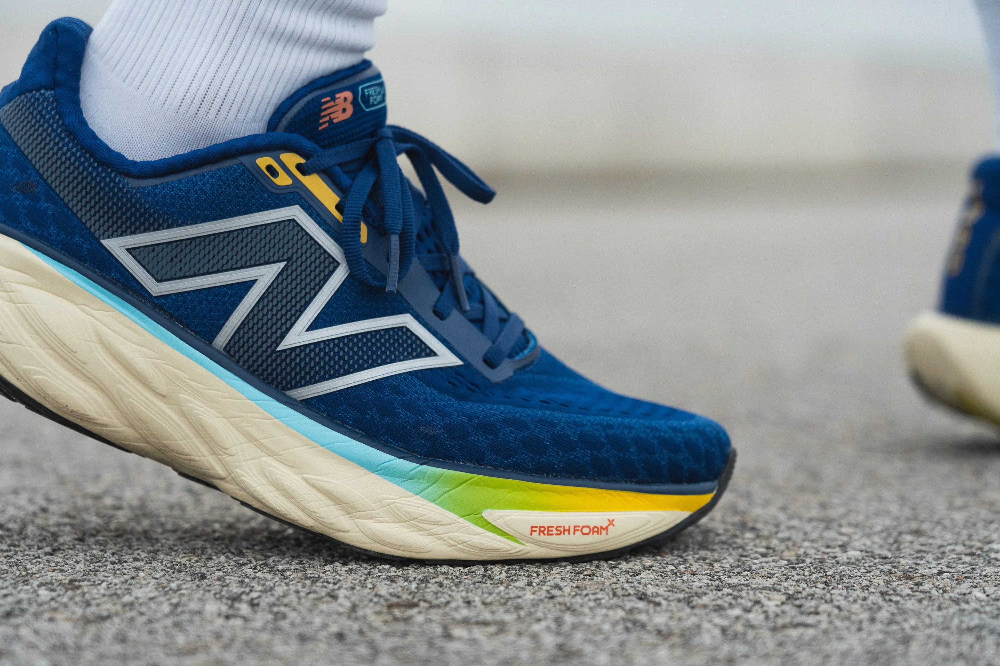
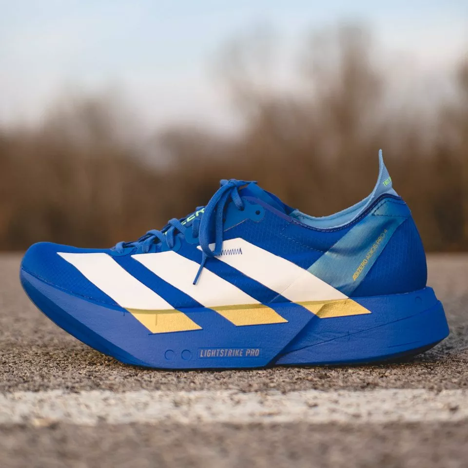
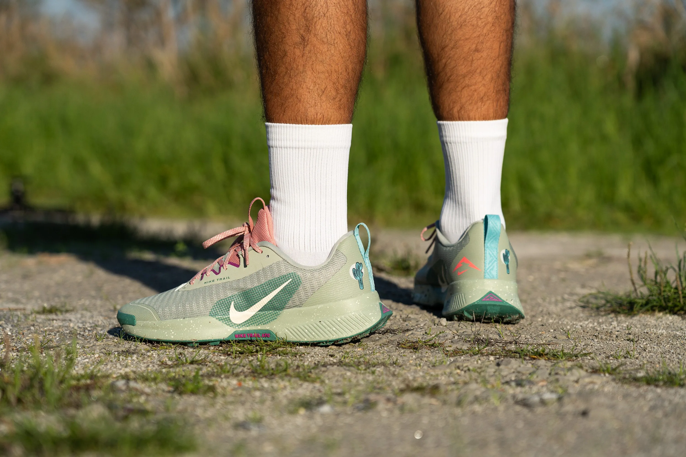
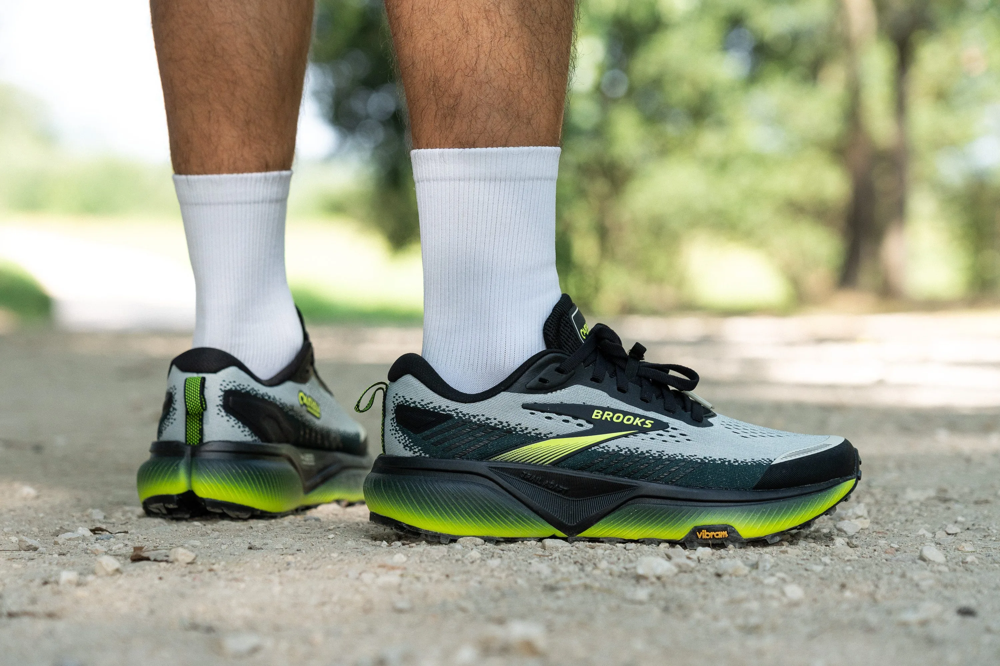
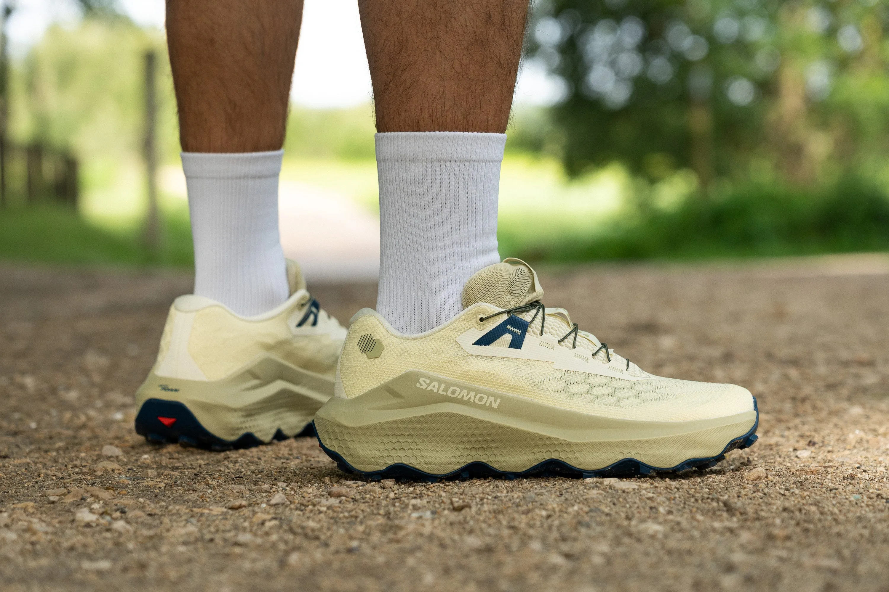
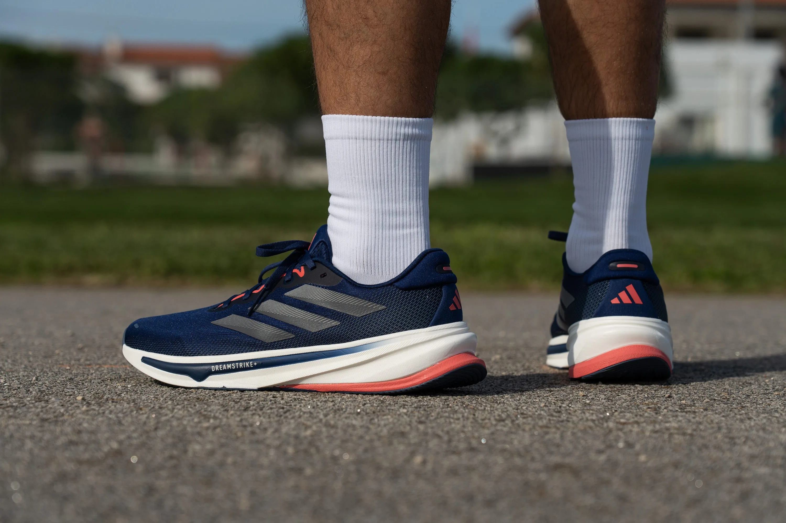
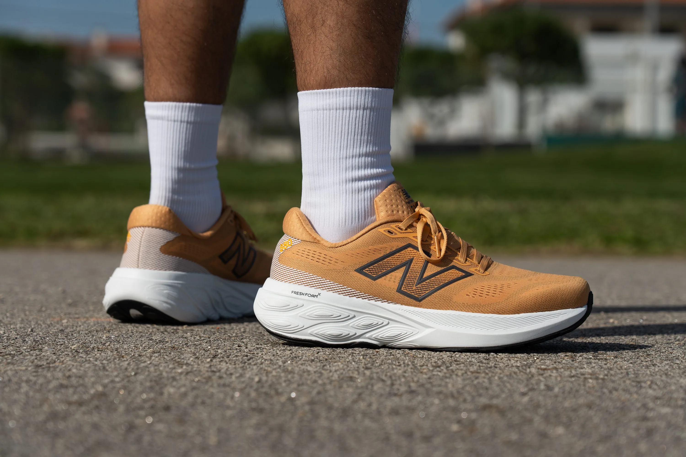

Hiri Arina
Nike Pegasus 41: Zapatila arina, hirian egunero korrika egiteko.
Erabilera: distantzia labur eta ertainak
Adibideko modeloa · 140 €
GURE MODELOAK
Hiru korrika mota eta bakoitzerako lau eredu. Aukeratu kategoria bat menuan.
Kaleko, parkeko eta bide lauetako korrikaldietarako.

Nike Pegasus 41: Zapatila arina, hirian egunero korrika egiteko.
Erabilera: distantzia labur eta ertainak
Adibideko modeloa · 140 €
.jpg)
Brooks Ghost 17: Oinpeko leuna entrenamendu arruntetarako.
Erabilera: asteko entrenamenduak
Adibideko modeloa · 150 €

New Balance Fresh Foam X 1080:v14O: Oinetan erosotasuna bilatzen dutenentzat.
Erabilera: distantzia luzeagoak
Adibideko modeloa · 190 €

Adizero Adios Pro 4: Arina eta malgua, erritmoa bizkortu nahi denean.
Erabilera: serieak eta lasterketak
Adibideko modeloa · 250 €
Mendi-bide, lurrezko pista eta ibilbide irregularretarako.

Nike Juniper Trail 3: Lehen mendi-ibilbideak egiteko aukera erosoa.
Erabilera: pistak eta bideak
Adibideko modeloa · 89,99 €
.jpg)
La Sportiva Bushido III: Harrizko lurrean heltzeko zola sendoarekin.
Erabilera: mendi-bideak
Adibideko modeloa · 175 €

Brooks Cascadia 20: Babes eta egonkortasun handiagoa ematen du.
Erabilera: lur irregularra
Adibideko modeloa · 160 €

Salomon Ultra Glide 4: Ibilbide luzeetan erosotasuna mantentzeko.
Erabilera: trail luzea
Adibideko modeloa · 170 €
Astean zehar korrika egiteko zapatila moldakorrak.
.jpg)
ASICS GEL-EXCITE 11: Oinez eta korrika hasteko zapatila erosoa.
Erabilera: hasiberriak
Adibideko modeloa · 65 €

Adidas Supernova Rise 2: Entrenamendu arruntetarako aukera orekatua.
Erabilera: korrika saioak
Adibideko modeloa · 112 €

New Balance Fresh Foam X 880v15: Arina eta erosoa, erritmo lasaian ibiltzeko.
Erabilera: saio lasaiak
Adibideko modeloa · 160 €

Nike Pegasus 42: Hainbat entrenamendu motatarako erabil daiteke.
Erabilera: aste osoko entrenamendua
Adibideko modeloa · 150 €